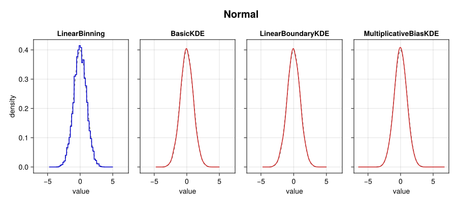
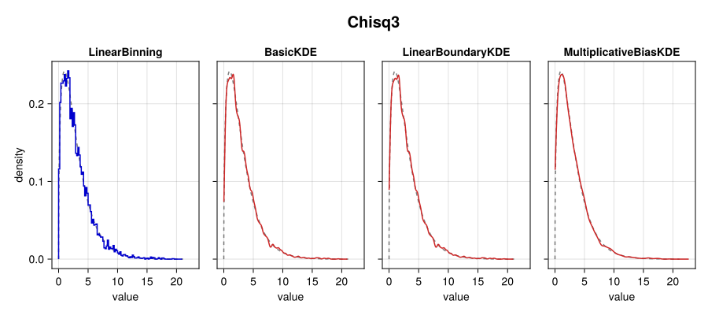
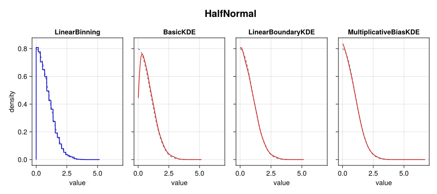
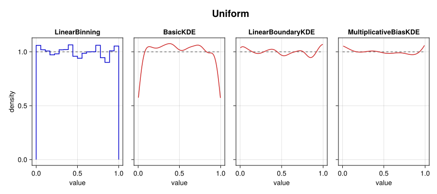

Explanation
Estimator Pipeline
Direct Comparisons
The following figures provide direct comparisons of the four major steps in the estimator pipeline described above through their visual impact on a few example distributions.
LinearBinning: The data is histogrammed onto a uniformly spaced grid.
For visualization purposes, the histograms are plotted with bins with a width equal to the automatically determined bandwidth (see Bandwidth Estimators below) for the distribution, whereas the remaining panels use 8× as many data points to achieve a smoother curve.
BasicKDE: This step convolves with the histogram with the Gaussian kernel in order to smooth the data from a discontinuous histogram into a smooth curve.
The basic density estimator is sufficient for an unbounded and smooth distribution like the Normal case. In the cases of the HalfNormal and Uniform distributions that have non-zero boundaries, though, the distribution is severely underestimated near the boundaries.
LinearBoundaryKDE: This step corrects for the boundary effects by recovering both the normalization (due to convolving with implicit zeros beyond the boundary) and recovers the slope of the distribution near boundaries.
Compared to the BasicKDE step, the HalfNormal and Uniform distributions near their boundaries are significantly improved.
MultiplicativeBiasKDE: The final stage permits use of a larger bandwidth to achieve a smoother density estimate without sacrificing the sharpness of any curves / peaks. The algorithm automatically increases the bandwidth when the multiplicative bias correction is used.
The visual impact is more subtle than in previous stages, but the smoothness of the Uniform and Chisq3 distributions compared to the previous stage are a consequence of the multiplicative bias correction permitting a larger kernel bandwidth (without broadening the peak in the Chisq3 distribution).
Plotting Code
using CairoMakie
using Distributions
using Random
import KernelDensityEstimation as KDE
dists = [
"Normal" => Normal(0.0, 1.0),
"Chisq3" => Chisq(3.0),
"HalfNormal" => truncated(Normal(0.0, 1.0); lower = 0.0),
"Uniform" => Uniform(0.0, 1.0),
]
estimators = [
KDE.LinearBinning(),
KDE.BasicKDE(),
KDE.LinearBoundaryKDE(),
KDE.MultiplicativeBiasKDE(),
]
for (name, dist) in dists
fig = Figure(size = (900, 400))
axs = Axis[]
for (ii, method) in enumerate(estimators)
dohist = method isa KDE.AbstractBinningKDE
rv = rand(dist, 5_000)
dens = KDE.kde(rv; method, bounds = dist, bwratio = dohist ? 1 : 8)
ax = Axis(fig[1, ii]; title = string(nameof(typeof(method))),
xlabel = "value", ylabel = "density")
lines!(ax, dist, color = (:black, 0.5), linestyle = :dash, label = "true")
plotter! = method isa KDE.AbstractBinningKDE ? stairs! : lines!
plotter!(ax, dens; label = "estimate",
color = dohist ? :blue3 : :firebrick3)
scatter!(ax, [0], [0], color = (:black, 0.0)) # transparent dot to stop suppressed y=0 axis
ii > 1 && hideydecorations!(ax, grid = false, ticks = false)
push!(axs, ax)
end
linkaxes!(axs...)
Label(fig[0, :], name, font = :bold, fontsize = 20)
save("comparison_$name.svg", fig)
end   
Bandwidth Estimators
References
- [1]
- M. Jones and P. Foster. A simple nonnegative boundary correction method for kernel density estimation. Statistica Sinica, 1005–1013 (1996).
- [2]
- A. Lewis. GetDist: a Python package for analysing Monte Carlo samples, arXiv e-prints (2019).
- [3]
- B. Hansen. Lecture Notes on Nonparametrics (2009).
- [4]
- Z. Botev, J. Grotowski and D. Kroese. Kernel density estimation via diffusion. The Annals of Statistics 38 (2010), arXiv:1011.2602.